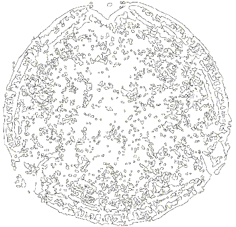
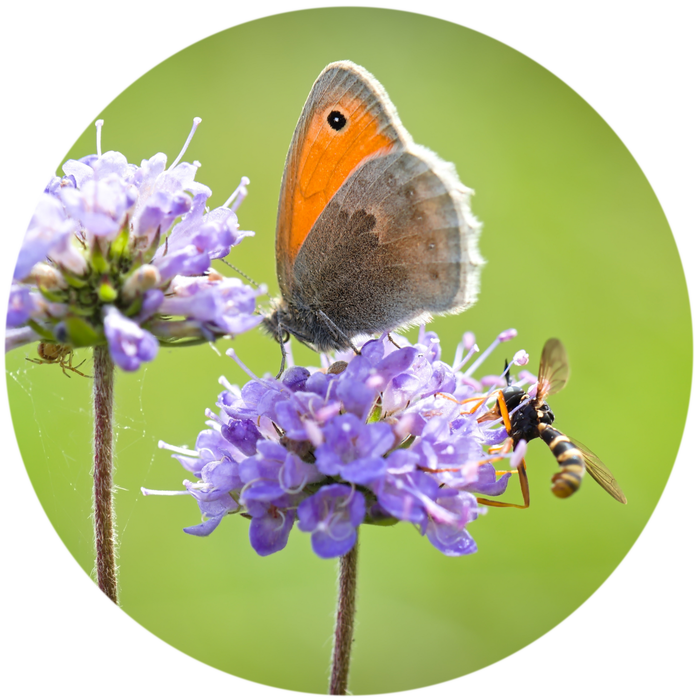
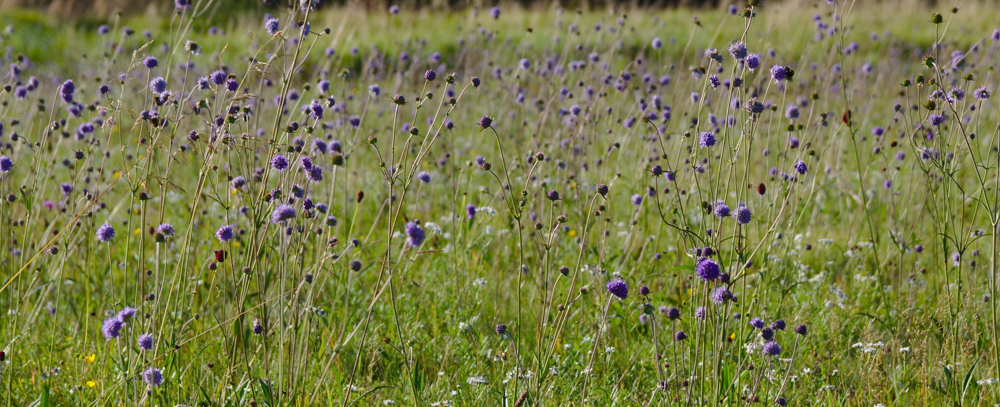
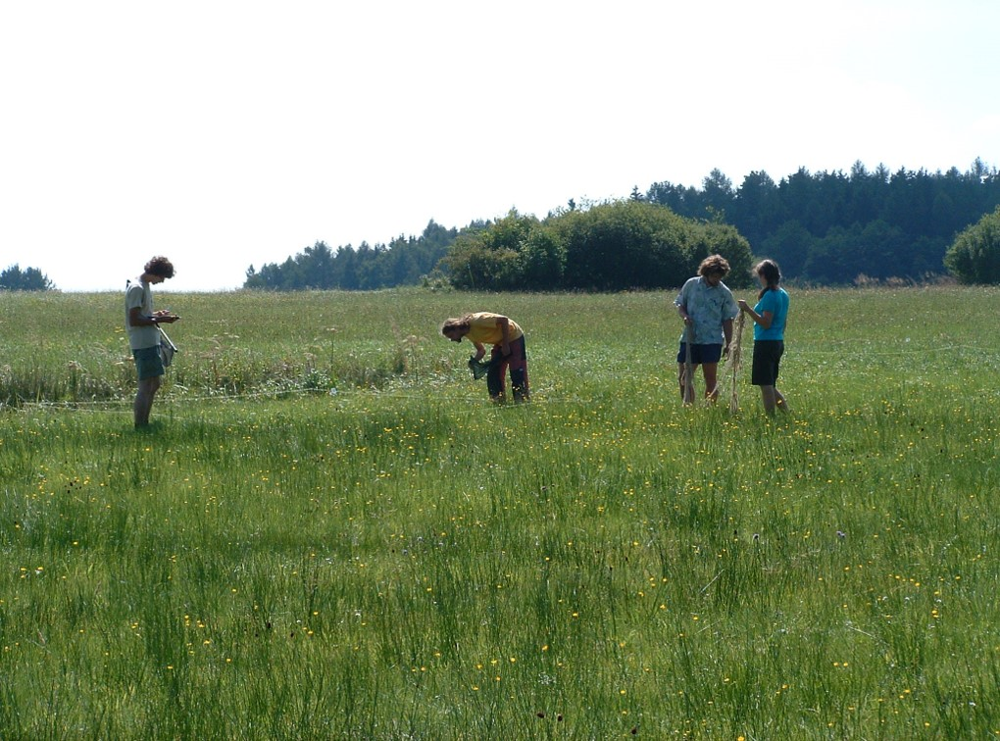
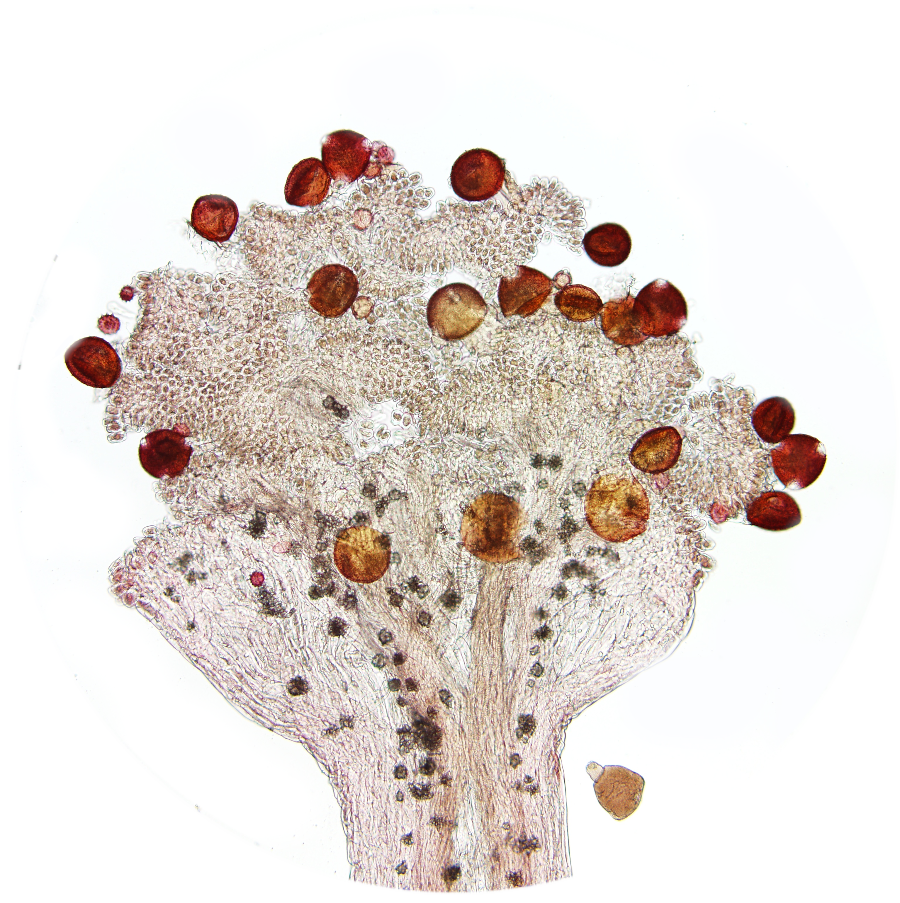
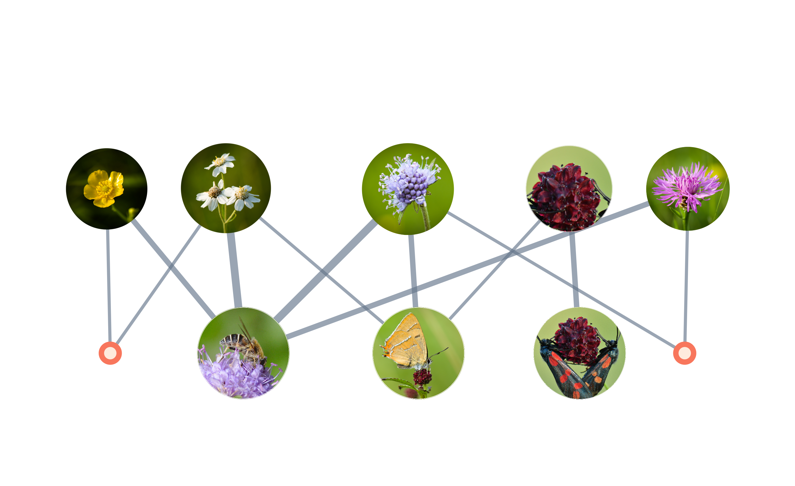
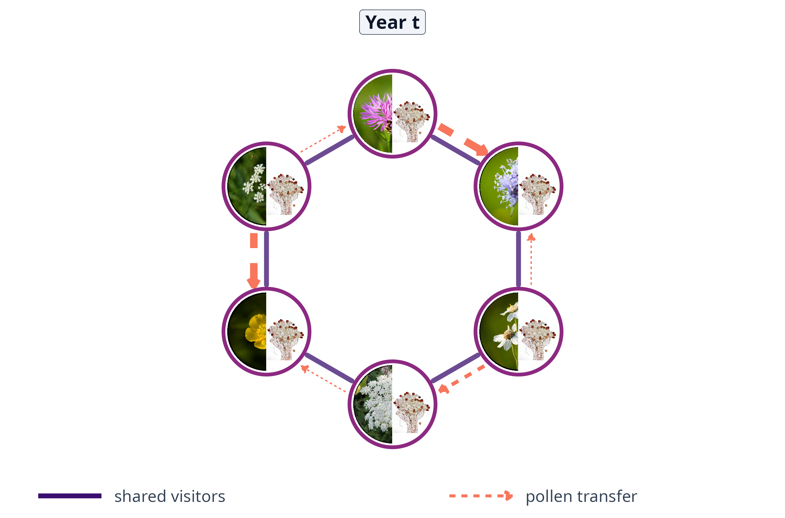

Sharing without losing: the journey of pollen through a species-rich meadow
Jakub Štenc1,2,3 & the Handrkov team
1Charles University (Botany) | 2Charles University (Zoology) | 3CREAF, Spain
Sharing without losing: the journey of pollen through a species-rich meadow
Jakub Štenc1,2,3 & the Handrkov team
1Charles University (Botany) | 2Charles University (Zoology) | 3CREAF, Spain


Sharing is the norm
≈ 1.5 min



The locality
≈ 1 min


15 years of data collection (2011–2025)
Plant and pollinator survey
≈ 1.5 min


42 378 plot surveys · 68 460 interactions · 176 pollinator taxa × 55 plant species
15 years of networks
≈ 1 min

From body to stigma
≈ 1 min


Plants linked by shared pollinators
≈ 1 min


A stable core
≈ 1.5 min

A more fragile network
≈ 1.5 min

Co-extinction simulation following Memmott, Waser, and Price (2004)
Losing the core costs more in dry years and more every year
Visits are not pollen
≈ 1.5 min




The Handrkov team
≈ 0.5 min

Acknowledgements: co-authors (Janovský, Hadrava, Mikát, Matoušková, Freudenfeld, Švanda, Ryšan, Pijálková, Horčičková, Straka, Bosch), students (N. Hanusová), field volunteers, funding (GAČR, GAUK, CREAF postdoc). Check funding numbers.
Join us

Thank you for your attention!